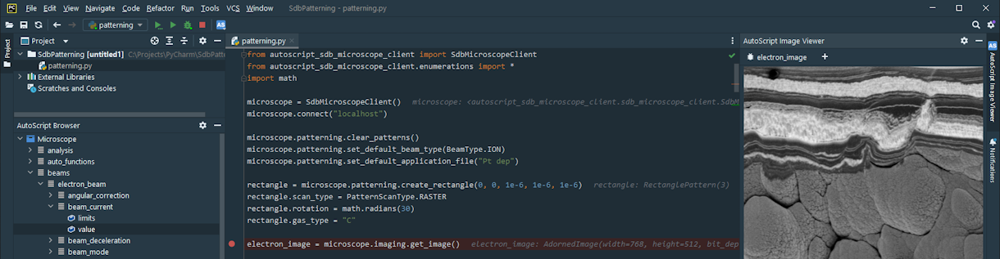

AutoScript is a comprehensive software package from Thermo Fisher Scientific designed to facilitate electron microscope control and
related data processing tasks within a Python 3 language environment.

The package encompasses the Python 3 distribution with an interpreter
and a selection of widely used packages such as OpenCV, NumPy or SciPy.
Most notably, it incorporates a collection of packages specifically tailored for Thermo Fisher Scientific
electron microscope control. These include autoscript_sdb_microscope_client,
which provides functions for microscope control, and autoscript_toolkit,
which offers domain-specific data processing capabilities with finely tuned algorithms for computer vision.
Another part of the installation is PyCharm; a Python integrated development environment.
PyCharm is customized to enhance the ease of writing and debugging scripts that leverage the AutoScript API.
AutoScript adopts a client-server architecture, with communication handled over TCP/IP.
This enables clients to connect both locally and remotely, supporting simultaneous connections from multiple clients.
This manual serves as a reference guide for the two essential packages mentioned above.
See the following sections for detailed information:
| AutoScript introduction |
| Microscope API |
| AutoScript toolkit |
| User guide |